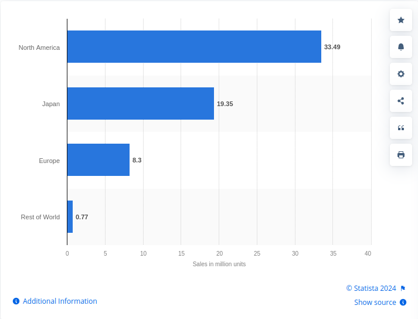

NES Tetris
- The making of Tetris
- Tetris takes off!! NES tetris then and now.
- Modern Tetris: Tetris for the virtual generation
The making of tetris
On the summer of 1984, Alexey Pajitnov thought of a new game idea, a puzzle game on the computers to fit tetrominos together on a board. A tetromino is a geometric shape composed of four squares, connected orthogonally
He named this game: Tetris
After writing this game for the Electronika 60 computer architecture, Pajitnov's colleagues wrote a version for IBM computers: allowing for graphics and sound
After the versions were released in the college, it became a sensation over night.
Then, Robert Stein (a software salesman) got the liscening rights to Tetris, so he sub-licensed it to Microsoft and Spectrum HoloByte
Next Henk Rogers and Russian government fought against each other to get rights to the game, and eventually, Henk Rogers got the rights to give to Nintendo.
Nintendo took these rights and put Tetris onto the Nintendo Entertainment System, the NES
Tetris takes off!! NES tetris then and now.
Immedietly, Tetris took the world by storm. Because it was sold in a home console, people bought it even more because of the convenience of playing at home instead of at an arcade.
And Tetris didn't just get used and then put in a closet to grow dust, it was here to stay. Currently, millions of copies have been sold world wide.

Currently NES tetris is stilled being played. The biggest news, recently, was a 13-year-old boy who beat NES tetris, the first to ever do it.
Modern Tetris: Tetris for the virtual generation
Now, there are a whole bunch of new versions of tetris.
The specific platform that I'll talk about is this fantastic web Tetris game: tetrh2>
Now, there are a whole bunch of new versions of tetris.
The specific platform that I'll talk about is this fantastic web Tetris game: tetr.io

Here is an image from a multiplayer game in tetr.io
If you look at the bottom of the screens, there are gray blocks. These blocks are called garbage. Garbage is sent to the bottom of the other persons field when the player scores lines.